graphviz数据结构作图工具应用比较广泛了，很多数据结构都可以使用gv画出来，比如常见的c语言的结构体、指针、链表等。也可以用来画流程图等常规图示，好用。
安装graphviz
mac os系统可以通过brew进行安装
brew install graphviz
然后就可以使用dot命令行工具了，这个工具就是用来生成图片的
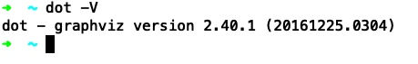
dot语言
graphviz从dot语言生成图形，这个dot语言的语法十分简单，没有复杂的分支判断语句，官方文档参考：https://graphviz.gitlab.io/_pages/doc/info/lang.html
声明一个图形
比如4.gv, 包含一个"hello"的图形
digraph {
hello
}
然后执行dot 4.gv -Tpng -o 4.png && open 4.png生成图片，效果如下
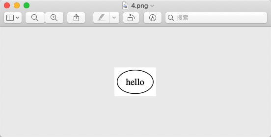
可以看到gv默认使用椭圆解释要画的图
调整图形形状
gv支持很多的图形形状，完整列表可以参考https://www.graphviz.org/doc/info/shapes.html
按类别可以分成两类，1是正方形、圆形等几何形状，另一类是表格(Record Node)
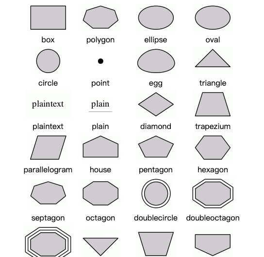
表格(Record Node)
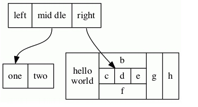
比如把上面"hello"这个椭圆形改成正方形，使用语法shape=box即可
digraph {
hello [shape=box]
}
效果如下
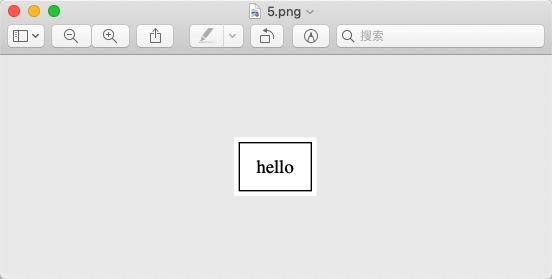
表格
digraph {
hello [shape=record label="first|second|last"]
}
效果如下
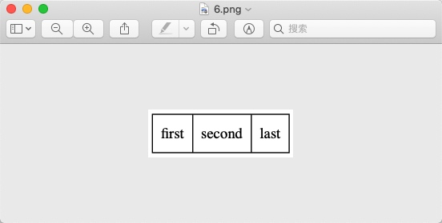
节点关系
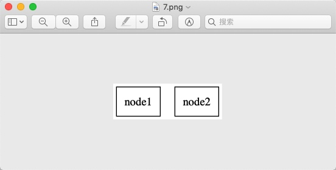
digraph {
node1 [shape=box]
node2 [shape=box]
}
下面来表示node1和node2的关系
单向
node1 -> node2
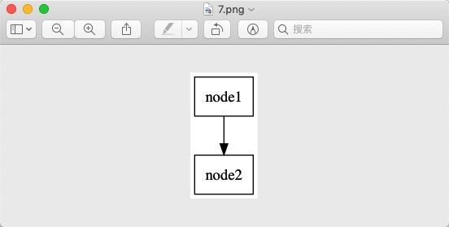
双向
node1 -> node2
node2 -> node1
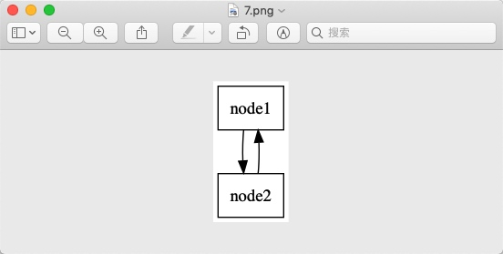
无明确方向
node1 -- node2
graph {
node1 [shape=box]
node2 [shape=box]
node1 -- node2
}
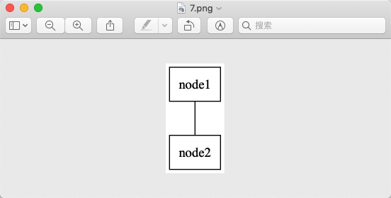
注意使用无明确方向的连接线必须把图像指定成无向图：graph，一般有方向的使用有向图：digraph
案例-双向链表
digraph G {
rankdir="RL"
value1 [
shape="circle"
label="value1"
]
value2 [
shape="circle"
label="value2"
]
item1 [
shape="record"
label="item1|
<f0> *next : struct item\l|
<f1> *prev : struct item\l|
<f2> *data : void* \l"
]
item2 [
shape="record"
label="item2|
<f0> *next : struct item\l|
<f1> *prev : struct item\l|
<f2> *data : void* \l"
]
item1:f1 -> null
item1:f0 -> item2
item1:f2 -> value1
item2:f1 -> item1
item2:f0 -> null
item2:f2 -> value2
}
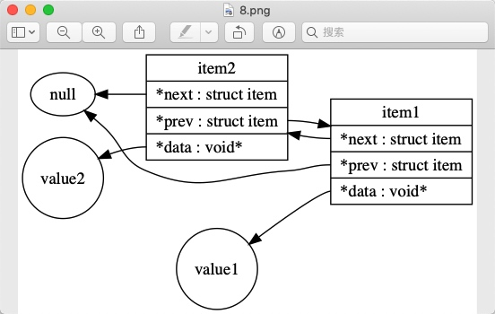
编辑器支持
typora, macdown等文本编辑器已经直接支持graphviz图片的所见即所得的编辑了
typora
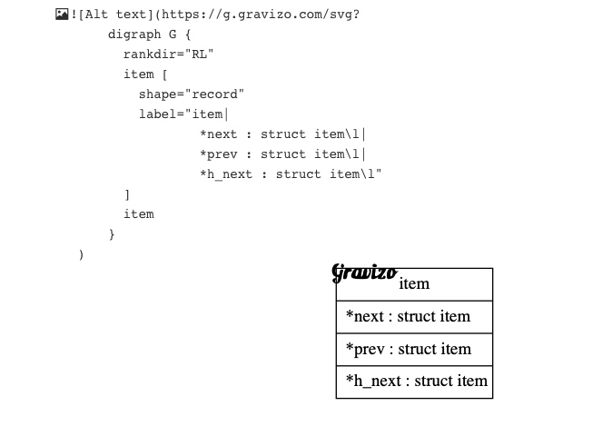
macdown
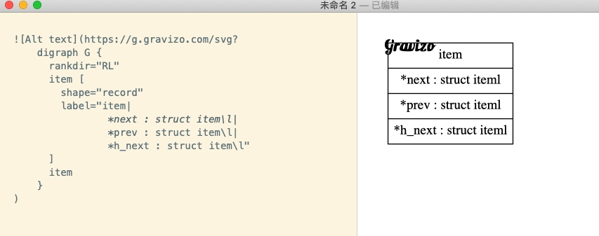
pdot() {
dot $1.gv -Tpng -o $1.png && open $1.png
}
可以关注我的公众号，第一时间获取最新更新!

一些注意的点
dot语言中的注释和c语言相同 // 表示单行注释, /* */表示多行注释
参考资料
- https://www.tonyballantyne.com/graphs.html
- https://github.com/vgrigoriu/graphviz-cookbook/wiki/Graphviz-Cookbook
- https://www.worthe-it.co.za/programming/2017/09/19/quick-introduction-to-graphviz.html
- https://graphviz.gitlab.io/_pages/doc/info/lang.html
- https://www.graphviz.org/doc/info/attrs.html
- https://zh.wikipedia.org/wiki/DOT%E8%AF%AD%E8%A8%80